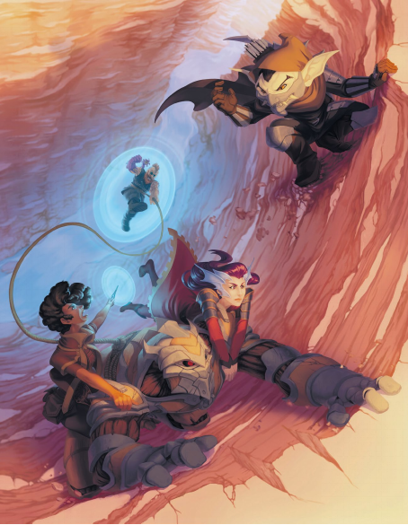

矮人在登上这壮观的山崖时一直发着牢骚
“这是自然位面，拉斯蒂”
“这是一趟假日旅行，拉斯蒂！”
“好吧，我得说，这是我有过的最糟糕的假日啊啊啊啊啊——”
在她的朋友开始下坠的时候，德菈就已经拔出了魔杖。她以手指握紧雷夫的肩甲，考虑着自己的选择。拉斯蒂被捆在战俑的身上，但他在绳子上的全部重量足以从岩壁上将雷夫拔起，让他们全都坠落下去。在她的脑海中，她想象着重力的线将矮人往下拉去，然后她以思绪重塑了画面，将线编织成一处可塑的平面。
“——啊啊啊啊嗷！”和浮碟撞上的冲击挤出了拉斯蒂身体里的空气，但他并没有受到严重的伤害。德菈转动着她的魔杖，盘绕起重力的丝弦，将平面向自己拉来。
矮人站了起来，打量着四周。“啊，这是个进步。你就不能更早一些整出这个吗？那样我的肩膀会好些。”
“我不希望浪费能量。”德菈一面回答，一面努力地维持着专注。
“为什么不呢？你不觉得我们已经爬了够多的山了，对今天..或者这辈子来说？”
雷夫最终攀上了峰顶。他将金属指节嵌入土壤，然后将自己、德菈和柔风送上山顶。德菈向四下看去...然后目光定格上方。原野上有着一棵巨大的树——一棵比萨恩的任何高塔都要挺拔的橡树。德菈能看见一艘飞艇挂在它的枝头，就像一个被孩子抛弃的玩具。那是风息号。而他们需要抵达那里。
艾伯伦的冒险者们能来自海洋的深处，或是世界的四面尽头。当探索艾伯伦时，你可能会获得一件达坎帝国的神器或与异变魔的共生体联结。这一章节提供了特别的玩家角色选项，它们能反映出艾伯伦丰富的知识，多样的种族和不同的文化。
这一节提供了幻身灵，达坎地精和马林提的背景选项，它们也同样反映出了这些种族的特色。